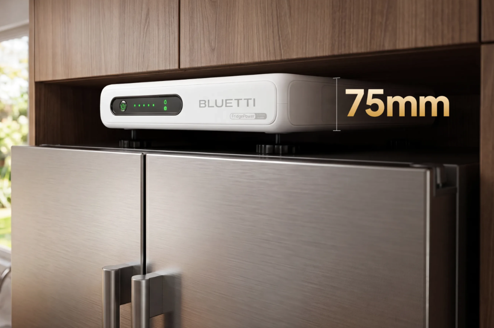
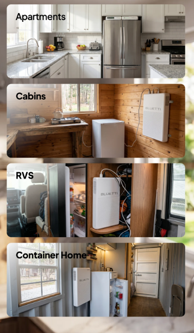

Executive Summary
Buy the BLUETTI FridgePower if your main outage fear is spoiled food, a dead aquarium filter, a disabled sump pump, or one critical appliance losing power while you are away. Skip it if you really want a general camping battery, a whole-home battery, or a portable unit you can easily carry around.
The pitch is simple: it does one boring job, and that is exactly why it is interesting.
FridgePower sits between two familiar choices: expensive installed home backup systems and portable power stations that live in a closet until a storm hits. Its buyer question is not whether battery backup is useful. It is whether a slim, fridge-focused UPS is worth paying for instead of a more flexible power station.
BEST FOR
The best buyer is someone who wants low-maintenance backup power for one important household appliance and does not want to think about extension cords, gas generators, transfer switches, or dragging a power station out during every storm warning.
- + Renters or homeowners who cannot install whole-home battery backup
- + Households that lose food during outages
- + People who want automatic switchover instead of manual emergency setup
- + Buyers with a fridge, aquarium, sump pump, network rack, or other appliance they care about most
Skip If
FridgePower is not the right default battery for everyone. Its strength is the same thing that limits it: it is designed around permanent, appliance-style backup.
- You want a portable camping battery you can move in and out of a car.
- You want to back up multiple rooms, HVAC, or hardwired circuits.
- You do not have a clean place to put a slim wall-adjacent battery near the appliance.
- You are price-sensitive and can tolerate a normal portable power station plus manual setup.
Price Reality Check
Early US pricing places the FridgePower around the premium portable power-station tier, with the base unit expected around $1,299 and bundles with expansion batteries moving far higher.
At this price, the value is not watts-per-dollar. The value is not having to think during an outage.
That means the buyer math depends on what you are protecting. If you only want phone charging and a laptop backup, this is overkill. If you have a stocked fridge, medication, an aquarium, a sump pump, or frequent outage anxiety, the dedicated design starts making more sense.
Deep Dive
The Fridge-First Design
The main thing BLUETTI gets right is focus. FridgePower is not trying to look like a camping battery with a handle and a wall of ports. It is trying to disappear beside an appliance and act like a backup layer.
That is a real benefit if you want protection before the outage happens.

- The slim format makes more sense beside a refrigerator than a chunky outdoor power station.
- The UPS-style switchover means the fridge can keep running without a manual plug shuffle.
- The second outlet widens the use case for another critical appliance, not a full room of devices.
- Expansion batteries give the system a path from short outage protection to multi-day coverage.
Buyer takeaway: This is strongest when you want one appliance protected all the time, not when you want one battery to do everything.
The UPS Promise
The key feature is the roughly 10-millisecond transfer from wall power to battery. That matters because refrigerators, pumps, filters, routers, and similar devices are not things most people want to babysit during a power failure.
The catch: not every appliance has the same startup draw, and runtime depends heavily on how efficient the appliance is, how often the compressor cycles, room temperature, and whether you add expansion batteries.
Buyer takeaway: Treat runtime estimates as a planning range, not a promise. A modern efficient fridge is a better fit than an old energy-hungry garage refrigerator.
Real-World Ownership Check
Where this gets tricky is placement. A refrigerator backup battery sounds simple until you look behind your fridge, check outlet access, think about cord direction, and decide where the battery actually lives.

- Setup: The basic idea is plug wall power into FridgePower, then plug the appliance into FridgePower. The physical layout may be the harder part.
- Maintenance: LiFePO4 chemistry and app monitoring should make ownership fairly hands-off, but firmware, charge settings, and battery health still matter.
- Fit: The slim form helps, but kitchens are not server rooms. Check clearance, ventilation, cord routing, and whether the battery will be visible.
- Noise: Expect some fan behavior during charging or heavier load. It should not be treated like a silent wall plate.
- Deal breaker: If your appliance outlet is awkward, hidden, overloaded, or hard to reach, the install may feel less elegant than the marketing photos.
What I Would Compare Next
The clean comparison is not only another BLUETTI battery. It is the whole decision tree for backup power.
- EcoFlow Delta-series power stations: Better if you want a more flexible portable battery for camping, tools, and general emergency use.
- Jackery Explorer systems: Better if portability and simple solar-generator branding matter more than appliance-style installation.
- BioLite backup battery concepts: Worth watching because behind-the-fridge backup is becoming a category, not just a single product idea.
- Whole-home battery or generator: Better if you need HVAC, hardwired circuits, medical redundancy, or long outage coverage.
Buyer Signal Analysis
FridgePower deserves a closer buyer look because the product is easy to understand but hard to place. Shoppers already understand backup power. What they may not understand is whether a dedicated refrigerator battery is smarter than a normal portable power station.
Buyer Confidence by Evidence Type
Assimilated Signal Sources
- ManufacturerBLUETTI positions FridgePower around appliance continuity, slim placement, expansion batteries, app monitoring, and fast switchover.
- Professional reviewsTechRadar and Popular Mechanics both frame it as a practical, focused appliance backup system rather than a general-purpose camping battery.
- YouTube demosVideo evidence will matter because buyers need to see placement, outlet routing, fan behavior, and whether the slim design works in real kitchens.
- Amazon ownersOwner data should be checked live for appliance compatibility, shipping weight, battery reliability, app behavior, and support response.
- Reddit chatterThe likely debate is FridgePower versus EcoFlow, Jackery, gas generators, whole-home battery systems, and whether a fridge-only solution is too narrow.
Unanswered Buyer Questions
QuietTrends read: This is a useful early review because the product solves a real problem, but the buyer decision depends heavily on home layout, appliance priority, and whether automatic protection is worth paying more for than flexible portable power.
OUR VERDICT
Compare First
BLUETTI FridgePower
FridgePower is a smart, focused backup system for buyers who want appliance protection without generator drama, but the price is high enough that a normal power station comparison is mandatory.
Final Buyer Guidance: Buy if refrigerator protection is your top emergency need and the install location works; compare first if you want portability, whole-home coverage, or the best battery capacity per dollar.